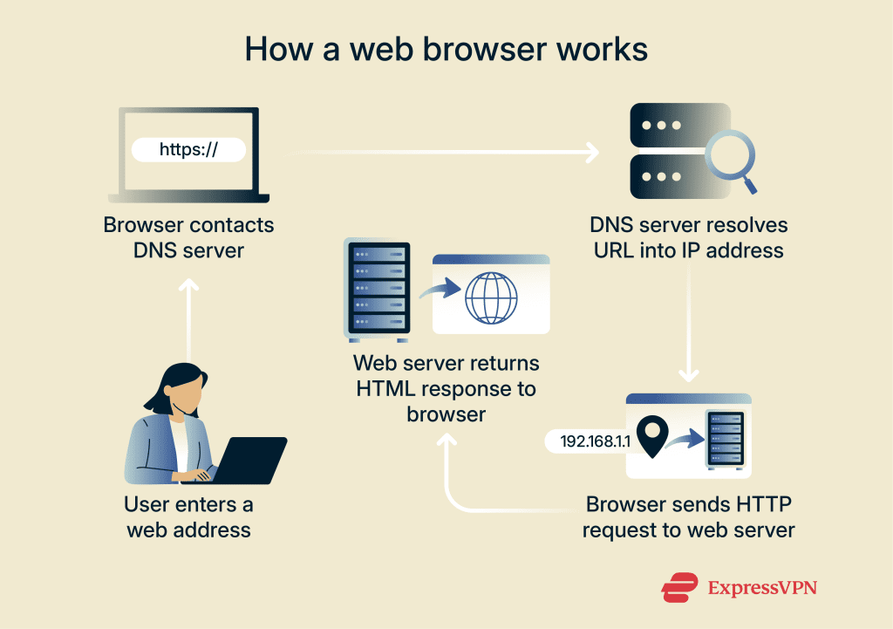

A web browser is a software application used to access, retrieve, and display content
on the World Wide Web.
Web browsers interpret HTML and other web technologies to display web pages visually. They act as an interface between users and the internet, enabling navigation, interaction, and access to online services.
